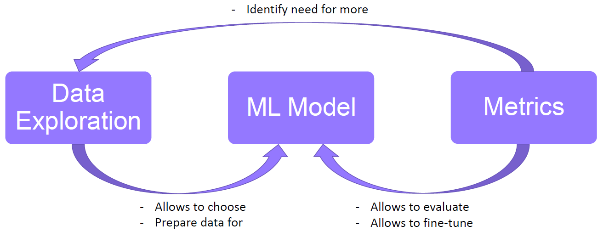
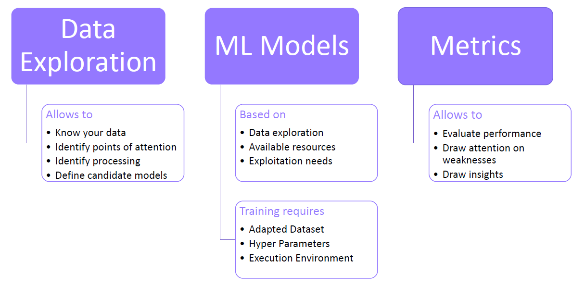

AIBT - Hands on
CLASS FORMAT & TAXONOMY
## Class format Welcome to the AIBT Hands-on first class 🔥🎉! During this first class we will introduce a certain number of tools that will be incredibly useful for the entire year we will spend together! Each class will contain the following elements: - a short introduction (maybe except for this one) - one or several practical notebook(s) (if you don't know what it is it will come) - an evaluation In addition, we will also ask you a short feedback once a class is over in order to incrementally build something that fits you better! --- ## Definitions Nowadays, there is a lot of "buzz" words which are often mixed or wrongly used: - **Artificial Intelligence (AI)**: Is actually a vast research domain which can include Genetic Algorithm, Meta Heuristics, Machine Learning, Deep Learning - **Machine Learning (ML)**: Is only a subdomain of AI. - **DeepLearning**: It is Machine Learning with Deep Neural Networks - **BigData**: It is the fact to process a huge quantity of data. It does not imply the use of any artificial intelligence techniques <div style="text-align:right"><cite><a href="https://github.com/erachelson/MLclass/blob/master/0%20-%20Introduction/pres.pdf">E. Rachelson</a></cite></div> -- ## Definitions **Data Scientist**: Often wrongly used and is expected to do "magic tricks" with some data. | Data Engineer | Data Scientist | Data Analyst | |:------------------ |:----------------- |:----------------- | | "Data engineers build and optimize systems that allow data scientists and data analysts to work. [...] Data engineers ensure that data is properly received, transformed, stored, and made accessible to other users" | "Data scientists are specialists who apply their expertise in statistics and building machine learning models to make predictions [...] the data scientist has the duty to process data into insight." | "Data analysts provide value to their companies through data, using it to answer questions and communicate results to help business decisions." | <cite><a href="https://towardsdatascience.com/data-engineer-data-science-and-data-analyst-what-the-difference-8f31eec127dc">Fahmi Nurfiki</a></cite> --- ## Scope of this course In this course we will mainly focus on: - Machine Learning - A Data Scientist journey - Even though the statistical theory is fun, we will have a very practical approach - Since it is only the second year of this course, suggestions will be warmly welcomed! --- ## Machine Learning What is machine learning ? > Machine Learning is "the use and development of computer systems that are able to > learn and adapt without following explicit instructions, by using algorithms and > statistical models to analyse and draw inferences from patterns in data" > > <div style="text-align:right"><cite><a href="https://languages.oup.com/google-dictionary-en/">- Oxford Languages</a></cite></div> -- ## Machine Learning ### 3 Main Learning types: | | Supervised Learning | Unsupervised Learning | Reinforcement Learning (RL) | | :--------------: | :------------------ | :-------------------- | :-------------------------- | | Available data | $\{(x, y)\}$ | $\{x\}$ | $\{(x, u, r, x')\}$ | | Objective | Learn a function: $f(x) = y$ | Find groups and correlations: $x \in C$ | Optimal Control: $f(x) = u \| max(\sum(r))$ | | Applications ex | Detect tumor, predict prices | Clusterize end-users | Video Games, Robotics | <div style="text-align:right"><cite><a href="https://github.com/erachelson/MLclass/blob/master/0%20-%20Introduction/pres.pdf">E. Rachelson</a></cite></div> -- ## Machine Learning ### Popular Domains - Computer Vision (CV) - Natural Language Processing (NLP) - Audio Processing - Time-Series - ... -- ## Machine Learning ### Wide-range of subtasks - Regression - Classification - Forecasting - Object Detection - Segmentation - Sentiment Analysis - ... -- ## Machine Learning ### A simplified ML project <div text-align="center"></div> -- ## Machine Learning ### A simplified ML project <div text-align="center"></div> --- Today class will focus on Object-Oriented Programming as it will be useful in the future! But first we will talk a little bit about the [necessary tools](2_tools.html) --- ## References: - [E. Rachelson](https://github.com/erachelson/MLclass/raw/master/0%20-%20Introduction/pres.pdf) - [Fahmi Nurfiki](https://towardsdatascience.com/data-engineer-data-science-and-data-analyst-what-the-difference-8f31eec127dc)